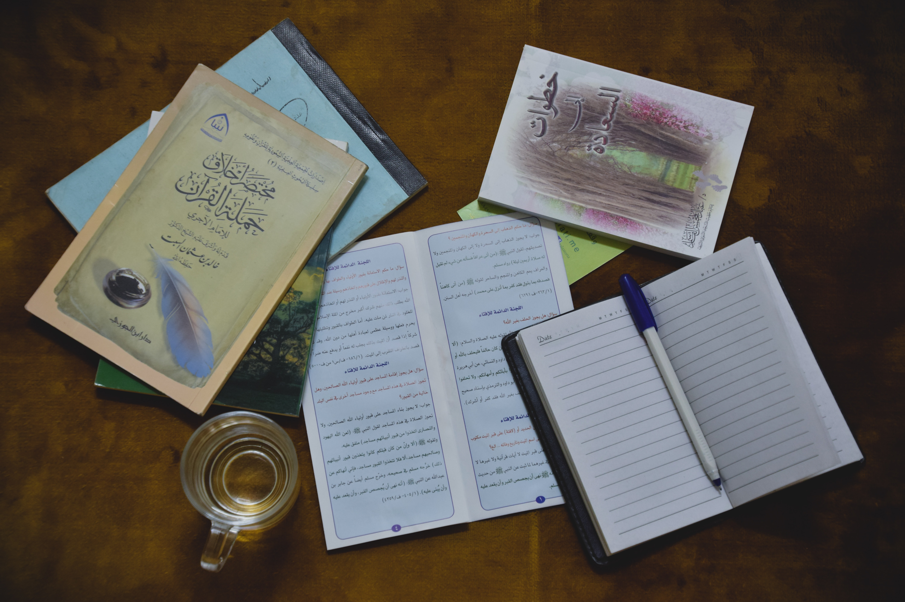

Jurusan Ilmu Ekonomi adalah jurusan yang mempelajari strategi pengelolaan sumber daya dengan mempertimbangkan efisiensinya dalam mencapai kesejahteraan.
Sumber daya yang dimaksud nggak cuma tentang uang atau biaya, tetapi juga sumber daya alam, waktu, bahkan tenaga.
Fakultas ini terdiri dari 8 Program Studi (Prodi) :
1. Prodi Manajemen (S1)
2. Prodi Ekonomi Pembangunan (S1)
3. Prodi Pendidikan Ekonomi (S1)
4. Prodi Akuntansi (S1)
5. Prodi Pendidikan Akuntansi (S1)
6. Prodi Akuntansi (D3)
7. Prodi Bisnis Digital (S1)
8. Prodi Kewirausahaan (S1)
2.Fakultas Hukum
Sedari dulu jurusan hukum menjadi salah satu incaran bagi mereka yang ingin melanjutkan pendidikan perguruan tinggi.
Peminatnya pun dari tahun ketahun terus bertambah, Anda salah satu diantaranya? Nah,
jika anda pernah melihat seorang pengacara yang mondar-mandir di televisi,
pekerjaan tersebut merupakan segelintir dari profesi yang ditawarkan oleh jurusan hukum.
Banyak anggapan dari masyarakat awam bahwa jurusan hukum pasti nanti jadi pengacara, advokat ataupun notaris.
Memang, secara garis besar profesi hukum itulah yang sering berhubungan langsung dengan masyarakat.
Hal inilah yang menimbulkan berbagai macam anggapan bahwa kuliah di jurusan hukum hanya seputar itu itu saja.
Tentunya hal ini akan membuat anda yang ingin mengambil kuliah hukum sedikit bimbang. sebelum anda memutuskan untuk mundur,
sebaiknya anda kenali terlebih dahulu mengenai pilihan konsentrasi apa saja yang ada di jurusan hukum.
Berikut beberapa konsentrasi jurusan hukum yang dapat anda pelajari dan banyak peminatnya.
3.Fakultas Teknik
Ilmu teknik merupakan ilmu yang mempelajari tentang rancangan dan pembuatan atau pembangunan benda-benda yang dapat membantu dan mempermudah kehidupan manusia.
Mulai dari pembuatan transportasi, teknologi, fasilitas umum, hingga sumber daya bisa ditelusuri lebih dalam sesuai jurusan teknik yang dipilih.
Kamu akan belajar bagaimana caranya bersikap teliti, tekun, rajin, dan terorganisasi dengan baik. Tak hanya itu,
teknik adalah jurusan kuliah di Indonesia yang memiliki masa depan cerah dan prospek kerja tinggi jika didalami dengan baik.
4.Fakultas Kedokteran
Profesi dokter juga masih digemari karena berbagai alasan.
Jika kamu juga berkeinginan untuk menjadi seorang dokter,
tentunya kamu harus menempuh pendidikan Jurusan Kedokteran terlebih dahulu.
5.Fakultas Psikologi
Psikologi adalah salah satu prodi paling populer di Indonesia. Selain mempelajari tentang perilaku dan kepribadian manusia,
lapangan pekerjaan untuk lulusan jurusan ini pun terbuka lebar, begitu pula dengan pilihan jalur karier yang beragam.
Belajar Psikologi itu seru banget, kamu akan jadi paham perilaku dan kepribadian manusia.
Kalau gosipnya anak Psikologi bisa baca pikiran orang atau bakal kerja di rumah sakit jiwa,
ini salah! Masih banyak yang belum mengerti bedanya psikolog dan psikiater.
6.Fakultas Seni Rupa Dan Desain
Kamu akan diajari cara berekspresi melalui melukis, seni grafis, seni pahat, kerajinan, dan sebagainya.
Kuliah di jurusan ini juga akan mempelajari sejarah seni, komposisi, dan tematik dalam karya seni.
7. Fakultas Teknologi Informasi
Jurusan information technology atau IT adalah jurusan dimana Kamu akan mempelajari cara untuk
merancang, mengimplementasi, melakukan konfigurasi,
serta serta merawat berbagai infrastruktur yang berkaitan dengan komputer dan teknologi informasi.

8.Fakultas Ilmu Komunikasi
Mahasiswa ilmu komunikasi akan mempelajari komunikasi intrapersonal (dengan diri sendiri),
komunikasi antarpribadi (dengan orang lain), komunikasi kelompok, komunikasi organisasi, dan komunikasi massa.
Ada pula komunikasi antarbudaya atau komunikasi internasional, komunikasi politik, dan komunikasi pemasaran.
9. Pariwisata
Jurusan Pariwisata adalah jurusan yang mempelajari semua hal berkaitan dengan pariwisata. Kamu bisa belajar mulai dari manajemen destinasi wisata, tour and travel, dan perhotelan.